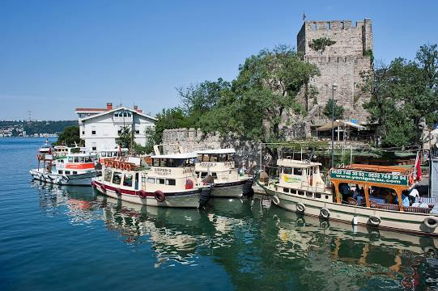

FAMOUS PLACES IN TOKYO

SEA LIFE
The TurkuaZoo also called Sealife is a public aquarium located in Bayrampaşa in Istanbul, Turkey. It was the first public aquarium in Turkey, and is one of the largest aquariums in Europe. In addition to being a major tourist attraction for Istanbul, the aquarium is a centre for marine research and conservation...
Fatih Sultan Mehmet Bridge
The Fatih Sultan Mehmet Bridge, also known as the Second Bosphorus Bridge, is a bridge in Istanbul, Turkey spanning the Bosphorus strait. When completed in 1988, it was the 5th-longest suspension bridge span in the world. The bridge is named after the 15th-century Ottoman Sultan Mehmed the Conqueror...

Anatolian Fortress